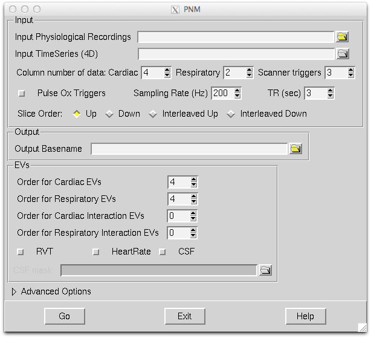

Running PNM

GUI
The recommended (and easiest) way to run PNM is via the Pnm GUI.
This GUI allows you to specify the following inputs:
- text file containing the sampled physiological recordings (each line containing numbers corresponding to one point in time)
- FMRI timeseries data (a 4D image in NIFTI format)
- information about the text file (which columns are cardiac/respiratory/triggers)
- information about the physiological recordings (e.g., sampling rate)
- information about the FMRI scans (e.g., slice ordering)
It also allows the user to specify the desired outputs:
- order of cardiac EVs (this is the number of pairs of sinusoidal frequencies to use - e.g. a value of 2 would indicate that the base frequency and the first harmonic, twice the base frequency, should be used - which would generate 4 regressors)
- order of respiratory EVs
- order of interaction EVs (see below)
optional RVT, HeartRate and CSF regressors
Triggers
Scanner triggers must be supplied, as experience has shown that relative timings between the MR scans and physiological recordings is not sufficiently accurate/reliable without this. The scanner triggers need to be once per volume (a version that can also accept once per slice and automatically work out which it is, should be available in the next release). The format for the trigger input is just the same as the other traces, and no special values need to be used as the software will automatically detect strong rising edges as the trigger points.
Cardiac input information can either be provided as a full trace or as "Pulse Ox Triggers" (as detected from any external software). Scanner triggers and cardiac triggers are not interchangeable as they contain different information.
Interaction EVs
The interaction EVs combine cardiac and respiratory frequencies. For instance, if the cardiac frequency is fc and the respiratory frequency is fr then the interaction terms have frequencies nc*fc +/- nr*fr where the permitted values of nc and nr are determined by the order of interactions entered in the GUI. For example, cardiac order 3 and respiratory order 2 would generate frequencies: 1*fc +/- 1*fr ; 2*fc +/- 1*fr ; 3*fc +/- 1*fr ; 1*fc +/- 2*fr ;2*fc +/- 2*fr ; 3*fc +/- 2*fr. For each frequency a pair of regressors (sin and cos) are generated. So the number of interaction EVs (regressors) can grow quite large.
Note that in practice the frequencies here are changing throughout the scan (as heart rate and breathing rate vary) so they should be thought of more like instantaneous frequencies.
PNM stage 1
Set up the GUI and click Go when ready.
Manual check/edit
Unfortunately, physiological recordings, and the detection of the peaks in them, tends not to be perfect. Therefore we have a simple and quick method for manually checking the recordings and peak detections, and noting down errors to be corrected by the following stage. This is all done within a browser that shows the waveforms and the appropriate peaks.
The output directory will be created and when stage 1 has finished running there will be a file ending with _pnm1.html.
- Open this file in the firefox web browser
- Note that it uses a javascript plugin that other browsers may not support, and must be run from the same machine that the analysis was run on, e.g. the server, and will not work if the files are moved
If you do not have the firefox browser (or cannot install it) then you can either skip this step (hoping for the best) or use some other software to view the outputs (e.g. matlab/octave) and note down the times (in seconds) of erroneous/extra peaks or missing peaks. You can then rerun popp (see the log file to get the previous options) and add the options --respadd,--respdel,--cardadd,--carddel for respiratory/cardiac additions/deletions.
Note that respiratory peaks are only shown (and only detected) in the case where the RVT output has been requested. If that is not the case, the respiratory trace is converted to a phase using the RETROICOR methodology, without requiring peak detection. Therefore, there is no need to manually check and correct the respiratory peaks unless RVT is requested. Currently the respiratory checkbox is still available on the webpage even when RVT is not selected - this will be changed in future.
PNM stage 2
If you have done the manual check/edit in the browser then follow the instructions given in the browser window (which are tailored to your particular directory and data).
If you have not done a manual check/edit then go to the output directory and run the script pnm_stage2.
Outputs of PNM
The main output of PNM is a file containing the desired regressor information. Since the timing of the MR acquisition varies with slice in the FMRI data, you do not get a simple text file output. Instead you get a set of outputs in the NIFTI format that are voxelwise regressors. There is also a text file with a name ending in _evlist.txt can contains the appropriately ordered list of all of these voxelwise regressors.
Using PNM in FEAT
To use the output of PNM with FEAT all you need to do is to find the file with the name ending in _evlist.txt and enter this (via the file browser) in the Voxelwise Confound List in the FEAT GUI (on the Stats tab). This will use these regressors as confounds, giving them automatic zero entries in all contrasts. With the GLM this ensures that wherever there is any shared variance between these and the EVs of interest (specified in the main design matrix) that the shared variance will be assigned to the physiological noise model. This is the conservative, and more correct, option and avoids inflating false positive rates, maintaining interpretability of any significant output results as being due to the changes of interest and not due to physiological noise.
Note on randomise
Since randomise currently cannot account for time-series autocorrelations (it invalids the exchangeability) it is not possible to use PNM with randomise.
Other tools (advanced)
The basic command-line tools used by PNM are: popp and pnm_evs.
The usage for these are:
Part of FSL (build 500)
popp
Copyright(c) 2011, University of Oxford (Mark Jenkinson)
Usage:
popp [options] -i <input data file> -o <output data file>
Compulsory arguments (You MUST set one or more of):
-i,--in input physiological data filename (text format)
-o,--out output basename for physiological data and timing/triggers (no extensions)
Optional arguments (You may optionally specify one or more of):
-s,--samplingrate sampling rate in Hz (default is 100Hz)
--tr TR value in seconds
--resp specify column number of respiratory input
--cardiac specify column number of cardiac input
--trigger specify column number of trigger input
--rvt generate RVT data
--heartrate generate heartrate data
--pulseox_trigger specify that cardiac data is a trigger
--smoothcard specify smoothing amount for cardiac (in seconds)
--smoothresp specify smoothing amount for respiratory (in seconds)
--highfreqcutoff high frequency cut off for respiratory filter in Hz (default is 5Hz)
--lowfreqcutoff low frequency cut off for respiratory filter in Hz (default is 0.1Hz)
--initthreshc initial threshold percentile for cardiac (default 90)
--nthreshc neighbourhood exclusion threshold percentile for cardiac (default 60)
--initthreshr initial threshold percentile for respiratory (default 80)
--nthreshr neighbourhood exclusion threshold percentile for respiratory (default 80)
--invertresp invert respiratory trace
--invertcardiac invert cardiac trace
--noclean1 turn off cleanup phase 1
--noclean2 turn off cleanup phase 2
--loadcardphase input cardiac phase for reprocessing (text format)
--loadrespphase input respiratory phase for reprocessing (text format)
--vol input volumetric image (EPI) filename
--startingsample set sample number of the starting time (t=0)
--respadd comma separated list of times (in sec) to add to respiratory peak list (uses nearest local max)
--respdel comma separated list of times (in sec) to delete from respiratory peak list (uses nearest existing peak)
--cardadd comma separated list of times (in sec) to add to cardiac peak list (uses nearest local max)
--carddel comma separated list of times (in sec) to delete from cardiac peak list (uses nearest existing peak)
-v,--verbose switch on diagnostic messages
--debug output debugging information
-h,--help display this messageand
Part of FSL (build 500)
pnm_evs
Copyright(c) 2011, University of Oxford (Mark Jenkinson)
Usage:
pnm_evs [options] --tr=3.0 -i fmri_data.nii.gz -o pnmevs -r resp.txt -c card.txt
Compulsory arguments (You MUST set one or more of):
-i,--in input image filename (of 4D functional/EPI data)
-o,--out output filename (for confound/EV matrix)
--tr TR of fMRI volumes (in seconds)
Optional arguments (You may optionally specify one or more of):
-c,--cardiac input filename for cardiac values (1 or 2 columns: time [phase])
-r,--respiratory input filename for respiratory phase values (1 or 2 columns: time [phase])
--oc order of basic cardiac regressors (number of Fourier pairs) - default=2
--or order of basic respiratory regressors (number of Fourier pairs) - default=1
--multc order of multiplicative cardiac terms (also need to set --multr) - default=0
--multr order of multiplicative respiratory terms (also need to set --multc) - default=0
--csfmask filename of csf mask image (and generate csf regressor)
--rvt input filename of RVT data (2 columns: time value)
--heartrate input filename for heartrate data (2 columns: time value)
--rvtsmooth Optional smoothing of RVT regressor (in seconds - default 0)
--heartratesmooth Optional smoothing of heart rate regressor (in seconds - e.g. 10)
--slicedir specify slice direction (x/y/z) - default is z
--sliceorder specify slice ordering (up/down/interleaved_up/interleaved_down)
--slicetiming specify slice timing via an external file
--debug turn on debugging output
-v,--verbose switch on diagnostic messages
-h,--help display this messageThe slicetiming file needs to be a text matrix that specifies the timing (in seconds) of every slice relative to the start of the volume acquisition (t=0). The matrix must have dimensions: (number of slices) by (number of volumes). The values represent the timings for one particular slice, across all volumes (e.g. timing of slice 2 in volume 1, slice 2 in volume 2, slice 2 in volume 3, etc.) which allows for a variable slice timing per volume.